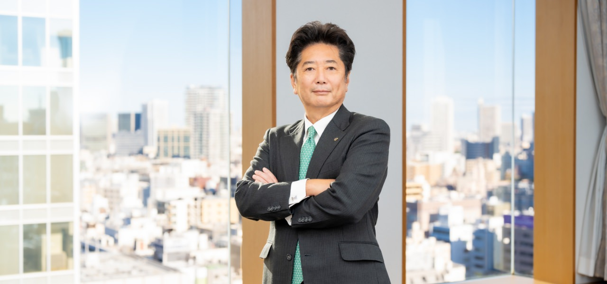

top message
文化をつなぐ志

代表取締役社長 社長執行役員
髙𣘺 敏弘
私たちの舞台は世界へ、
その源泉はいつでも「人」の中に。
エンターテインメントは、 日本からアジアへ、 そして世界へ
昨今、日本のエンターテインメントを取り巻く環境は大きく変化しています。インターネットの広がりとともに、SNSや動画配信プラットフォームといった新しいメディアが台頭し、旧来から続いてきたビジネスモデルそのものが変革期を迎えました。一方で、インバウンドの拡大とともに、歌舞伎をはじめとする日本の伝統文化には、再び脚光が集まっています。
もうひとつ大きな流れをあげるとするならば、日本からアジアへ、世界へというマーケットの広がりでしょうか。こうしたビジネスについては韓国が先行していますが、日本にはさらに大きな潜在力があると考えています。ビジネスモデルの変化や時代の流れをつぶさにとらえることで、グローバル市場における日本のエンタメの可能性はどこまでも広がっていくはずです。
ものづくりへの こだわりと情熱
このような変化の最中にあって、松竹の強みはどこにあるのか？それはやはり、世界中の人々が長く親しんできた演劇・映画というエンターテインメントの2本柱を、事業として継続してきたことではないでしょうか。
言うまでもなく歌舞伎についてはオンリーワンの存在ですし、映画にしてもその製作力は高い評価を獲得しています。さらに最近では、音楽LIVEや演劇作品の映画化など、舞台と映画の融合によってヒット作が生まれています。これも、演劇と映画を柱とする松竹の新しい可能性です。こうしたものづくりへのこだわりや情熱も、松竹らしさだと私は考えています。
当社の会長も“ Content is King”という言葉をよく使っていますが、まさにそのとおり。演劇にしろ、映画にしろ、自分たちでつくり出していく力にこだわり、鍛え続けていきたい。エンターテインメントの世界でも、最後に勝つのは、やはり「つくる」力だと信じています。
エンターテインメントは、 突き詰めていけば「人」
率直な話、エンタメは衣食住と違い、人々の生活にとって必要不可欠なものではありません。でも、人が幸せに生きていくためには、やはりなくてはならないものではないでしょうか。悲しんでいる人を笑顔にしたり、困っている人を勇気づけたり、その人の人生を揺さぶるというか。私たちは、そんな人たちに寄り添うことができる、とても魅力的な仕事に携わっているのだと思います。
ものづくりだけでなく、その源泉となる「人」に対するこだわりも、松竹ならではの特徴でしょう。社員はもちろん、プロデューサーや監督、製作に関わるたくさんの人を常に大切にしてきたからこそ、いまの松竹があるのです。
その「人」についてですが、私は、松竹は「やさしい人」の多い会社だと思っています。おおらかな気質があるというか、蹴落としたりせず相手を尊重しながらビジネスを推進していく。私が就職活動をしたのはずっと前のことですが、当時はバブル経済真っ盛りで、いろいろな業界の内定をいただきました。その中から松竹に入社した決め手は、結局は松竹の「人」だったと感じています。
社長の私がここまで言うのもどうかと思いますが、松竹は風通しもよく、とても自由な会社。自由であるということは、いろいろなチャレンジにも寛容だということ。また、さまざまな価値観にも寄り添ってくれる、誰にとっても働きやすい会社だと思っています。エンターテインメントは、突き詰めていけば「人」。よい人が集まってこそ、よい仕事ができる。松竹が130年もの歴史を刻み続けてきたのも、このような風土を大切にしてきたからであり、だからこそ新しい未来を描けるのだと考えています。
100年後も、 世界で存在感のある 企業であってほしい
企業にとって利益を追求することは重要ですが、そればかりにこだわっていては意味がありません。利益を得たならば、未来へと投資し、社員たちに還元する。そんな会社であり続けたいと思っています。お話ししたように、「人」あっての松竹なのですから。
しかし、社長としての本音を言えば、もう少し利益をあげて会社を大きくしたいですね。それは、より多くの人々にエンタメを届けることにつながります。
これから松竹に入社して、新しい風を吹かせてくれる方々には、とても期待しています。
また、松竹には企画や製作ばかりでなく、その魅力を世界に発信したり、そこから新しいビジネスを創出したり、想像しきれないほどのさまざまな仕事があり、存分に活躍できる環境があります。私自身も、入社後は経理の分野で長く経験を積んできました。そのキャリアが、社長という仕事でも大いに役立っています。
私は、松竹のエンターテインメントは世界に誇れるものだと信じています。50年後も100年後も、日本で、さらには世界で存在感のある企業であってほしい。私たちの志を未来へとつないでくれるような、新しい出会いを心より楽しみにしています。